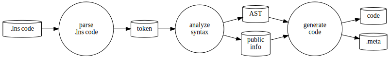
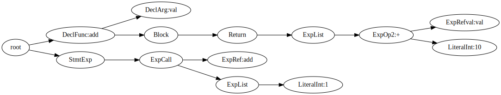

Y.1 LuneScript の開発方法
LuneScript そのものの開発について説明する。
LuneScript もそこそこの規模になってきて、 自分でも時間が空くと思い出すのに苦労するので、 備忘録として残しておく。
もちろん、他の人が LuneScript の開発に興味を持ってくれるのであれば、 それはそれで嬉しい。
開発環境
LuneScript 開発は Ubuntu 上で行なっている。 が、別に Linux 系なら多少環境を整えればビルドできるだろう。
個人的には、 Windows は GUI ツールで遊ぶための環境、 あるいは、 MS Office を使う環境であって、 プログラミングする環境ではないと思っている。
とはいえ、 WSL は素晴しいと思っているし、 普段使っている LuneScript の開発環境の Ubuntu も WSL 上の Ubuntu だったりする。
ビルド
ビルドは Make で管理している。
後述するが、テストも Make で行なっている。
ビルド環境
ビルドには以下の環境が必要になる。
- liblua5.3-dev
- lua5.3
- go 1.16 以降
- gcc
Ubuntu の場合は、 上記を apt インストールするだけで環境を整えられる。 一方で、Ubuntu 以外の場合は Makefile を適宜変更する必要がある。
ビルドは、全て src ディレクトリで行なう。
$ cd src
以降の記載は src ディレクトリで作業することを前提で説明する。
ビルド方法
LuneScript は、セルフホストで開発している。 つまり、LuneScript のビルドには LuneScript のコンパイラ lnsc が必要になる。
また、 LuneScript は lua VM 上で動く lua 版と、 go でネイティブコードコンパイルする go 版がある。 そして go 版の lnsc は、 git では管理していない。
よって、 git から clone した状態では lua 版を使ってビルドする必要がある。
ただし、 lua 版は go 版に比べて 10 倍以上の時間がかかるので、 lua 版を利用してビルドするのは開発効率が悪い。
そこで、まずは lua 版 LuneScript を利用して、 go 版の LuneScript をビルドする。
go 版 LuneScript のビルド方法
go 版 LuneScript は、次のコマンドでビルドできる。
$ make go-build
これにより、 src/lnsc が生成される。
なお、以下 go-build に以下のオプションを指定すると、 Lua のランタイムに gopherlua を利用するようになる。
$ make go-build GOTAG=gopherlua
gopherlua 版を使うことで、 純粋な go プログラムになるので、 Linux 以外の環境での実行も容易になる(はず)。
ただ、自分は試したことがない。
特にディレクトリパスの区切り文字を / 固定で使っていたりするので、
実際に Linux 以外の環境で LuneScript を利用する場合、
その辺りの対応は必要になるだろう。
go 版 LuneScript を利用したビルド方法
go 版 LuneScript を利用して、セルフホストするには、次のコマンドを実行する。
$ make -j test-comp-with-go LUA=
test-comp-with-go のターゲットは、次の処理を行なう。
- セルフホストのビルド
- ビルドした lnsc のテストを実行
- テストにエラーがなければ、新しくビルドした lnsc と、 トランスコンパイルした .lua ファイルを現在のものと置き換える。
なお、何らかのエラーが発生した場合、 lnsc と .lua ファイルが置き換わらないので、 LuneScript の開発過程でもしもバグが起きたとしても、 安全に開発を続けられる。
もしもテストでエラーを検知しないでビルドだけして lnsc を更新してしまうと、 セルフホスト自体が正常に出来なくなってしまい、開発が進められなくなる。
この辺りは次のネタで書いているので、興味があれば参照して欲しい。
なお、上記コマンドの -j は make の並列処理を利用するオプションで、 ビルドを高速に行なうために利用している。
ビルド中に何らかのエラーが発生した場合は、この -j の指定を除いて実行すると、 エラーを追い易いことが多い。
また、上記コマンドの LUA= は、
Lua5.1 用の lua コードへの変換を行なうことを意味する。
lua5.1 と lua5.2 以降の LuneScript ソースには一部互換がないため、 Lua5.1 だけ別にビルドする必要がある。
ただし、 Lua5.1 のビルド、テストを実行するため、当然その分の時間がかかる。
よって、普段は LUA= を指定して Lua5.1 のテストを除外し、
最終的なリリース前に LUA= の指定を外してビルドを行なう、という運用になる。
lua5.1 でのテストを行なうには、 下記パッケージを事前にインストールしておく必要がある。
- lua5.1
- liblua5.1-0-dev
なお、 go 版を利用せずに lua 版でセルフホストを行なうには、 次のコマンドを実行する。
$ make -j test-comp LUA=
テストの diff を許容する
上記のセルフホストビルド時のテストは、 既存の lnsc の実行結果と、新しくビルドした lnsc の実行結果とを、 diff して差分の有無を確認することでエラーチェックしている。
このテストには、主に以下のチェックを行なっている。
- 本来正常に動くべきコードのテスト
- 本来エラーを検知すべきコードのテスト
一方で、LuneScript をセルフホストで開発していると、 diff が出ることが正しいということがある。
例えば、 LuneScript の構文エラーチェックを厳しくし、 新しいエラーが発生するようになったとき等は、 既存の lnsc のテスト結果と、新しくビルドした lnsc のテスト結果には、 エラーメッセージの差分が発生する。
このような差分をテストエラーとしてしまうと、先に進められない。
この差分を許容するための方法が次のコマンドである。
$ make accept-package [WITH_GO=y]
上記コマンドを実行すると、 diff がもう一度表示され、 さらに以下のプロンプトが表示される。
accept? (y/n):
ここで y を入力すると、差分を許容し、 新しくビルドした lnsc を正常として処理する。
なお、差分を許容すると元に戻せない(git に直前の状態を保持しているなら戻せる)ので、 差分を許容する場合は十分に注意すること。
ソース構成
LuneScript のソースは src/lune/base 以降で管理している。
- lune/base
- lune/base/runtime_go
基本的には lune/base に全ての LuneScript のソースを置いていて、 lune/base/runtime_go は go 版 LuneScript のランタイム制御を置いている。
LuneScript 開発の大部分は、 lune/base 内の .lns ファイルを変更することになる。
ソースのカテゴリ
LuneScript のソースは、その処理内容によって次のカテゴリに分けられる。
-
全体制御
- Option.lns
- front.lns
-
非同期処理
- Async.lns
- Runner.lns
-
型定義
- Ast.lns
- Builtin.lns
- Types.lns
-
トークン解析
- AsyncParser.lns
- Parser.lns
-
構文解析
- frontInterface.lns
- LuneControl.lns
- BuiltinTransUnit.lns
- Import.lns
- Macro.lns
- Meta.lns
- Nodes.lns
- AstInfo.lns
- TransUnit.lns
- TransUnitCtrl.lns
- TransUnitDecl.lns
- TransUnitExp.lns
- TransUnitIF.lns
- TransUnitStatementList.lns
- TransUnitTest.lns
-
コード変換
- NodeIndexer.lns
- Converter.lns
- Writer.lns
- convGo.lns
- convLua.lns
- convPython.lns
- dumpNode.lns
- glueFilter.lns
- Formatter.lns
- OutputDepend.lns
-
Lua 関連
- LuaMod.lns
- LuaVer.lns
- DependLuaOnLns.lns
-
テスト関連
- Testing.lns
- TestingMacro.lns
-
その他
- GoMod.lns
- Code.lns
- Depend.lns
- Json.lns
- Log.lns
- Str.lns
- Util.lns
- Ver.lns
LuneScript 開発を進めるにあたって、 TransUnit.lns を一番多く修正することになるだろう。
なお、トランスコンパイル先の言語に、新しい言語を追加するケースでは、 conv???.lns を定義することになる。
フロー
処理のフローは概ね次の通り。
- 字句解析で Token 生成
- 構文解析で AST 生成
- AST から対象言語へコード変換
この全体のフローを制御しているのが front.lns である。
digraph G {
rankdir=LR;
parse [shape="circle",label="parse\n.lns code",fontcolor="#000000";];
syntax [shape="circle",label="analyze\nsyntax",fontcolor="#000000";];
conv [shape="circle",label="generate\ncode",fontcolor="#000000";];
lns_code [shape="cylinder",label=".lns code",fontcolor="#000000";];
token [shape="cylinder",label="token",fontcolor="#000000";];
ast [shape="cylinder",label="AST",fontcolor="#000000";];
decl [shape="cylinder",label="public\ninfo",fontcolor="#000000";];
code [shape="cylinder",label="code",fontcolor="#000000";];
meta [shape="cylinder",label=".meta",fontcolor="#000000";];
lns_code -> parse;
parse -> token;
token -> syntax;
syntax -> ast;
syntax -> decl;
ast -> conv;
decl -> conv;
conv -> code;
conv -> meta;
}
字句解析
字句解析は与えられた文字列から、予め登録された単語を切り出してトークンを生成する。
この時、トークンにはそのトークンが現われた文字列内の位置情報と、 次に示す種別情報を付加する。
- Cmnt (コメント)
- Str (文字列)
- Int (整数)
- Real (実数)
- Char (文字)
- Symb (シンボル)
- Dlmt (区切り文字)
- Kywd (キーワード)
- Ope (演算子)
- Type (型)
- Sheb (Shebang)
例えば次のコードを字句解析すると、
// @lnsFront: skip
print( "hoge" );次のトークンを生成する。
| No | 種別 | 行 | 列 | 文字列 |
|---|---|---|---|---|
| 1 | Symb | 1 | 1 | |
| 2 | Dlmt | 1 | 6 | ( |
| 3 | Str | 1 | 8 | "hoge" |
| 4 | Dlmt | 1 | 15 | ) |
| 5 | Dlmt | 1 | 16 | ; |
この処理を行なうのが、 AsyncParser.lns である。
Parser クラス
Parser クラスは、上記の字句解析を行うクラスである。
// @lnsFront: skip
pub abstract fn getToken() mut : &Token!;getToken() メソッドを呼ぶと、 Token が取得できる。 この getToken() を順次呼ぶことで、解析対象の Token を列挙できる。
PushbackParser インタフェース
PushbackParser インタフェースは、 push back をサポートするインタフェースである。
push back とは、 getToken() で取得した Token を押し戻し、
次に getToken() した際に、もう一度その Token を取得できるようにする機能を持つ。
この機能は、構文解析を行なう際に利用する。
例えば次のようなコードを解析する際、
// @lnsFront: skip
if val {
}
print();if文の}の解析が終った後に、else節が続くかどうかを確認するために、 次のトークンprintを取得する。printはelseではないためトークンをpush backしてif文の解析を完了する。- そして、 次の文を解析するため次のトークンを取得する。
- ここで取得されるトークンは、先程
push backしたprintになる。
構文解析
Parser から取得した Token を基に、 LuneScript の syntax を解析し、AST を生成する。
例えば次のコードから、
// @lnsFront: skip
fn add( val:int ) : int {
return val + 10;
}
add( 1 );次の AST を生成する。
digraph G {
rankdir=LR;
root;
DeclFunc[ label="DeclFunc:add"];
DeclArg[ label="DeclArg:val" ];
Block;
Return;
ExpList1[label="ExpList"];
ExpOp2[ label="ExpOp2:+"];
ExpRefval[ label="ExpRefval:val"];
LiteralInt_10[ label="LiteralInt:10"];
StmtExp;
ExpCall;
ExpRef[ label="ExpRef:add"];
ExpList2[label="ExpList"];
LiteralInt_1[label="LiteralInt:1"];
root->DeclFunc;
DeclFunc->DeclArg;
DeclFunc->Block;
Block->Return;
Return->ExpList1;
ExpList1->ExpOp2;
ExpOp2->ExpRefval;
ExpOp2->LiteralInt_10;
root->StmtExp;
StmtExp->ExpCall;
ExpCall->ExpRef;
ExpCall->ExpList2;
ExpList2->LiteralInt_1;
}
構文解析では、 AST を生成するだけでなく、次の処理も行なう。
- 文法エラーチェック
- 引数の型チェック
- 型推論
- 変数の未初期化チェック
- 同名シンボル多重定義チェック
- 継承関係のチェック
- mutable, immutable チェック
- マクロ展開
- import 処理
- etc…
トランスコンパイラの最も重要な処理と言える。
なお、 LuneScript では構文解析処理内で、
- 補完の問い合わせに対する処理
- 型情報の問い合わせに対する処理
などの emacs 連携などに利用する問い合わせ処理も行なっている。
コード出力
AST から変換先のコードに出力を行なう。
例えば、次の AST から
次の Lua のコードを出力する。
--mini.lns
local _moduleObj = {}
local __mod__ = '@mini'
local _lune = require( "lune.base.runtime7" )
if not _lune7 then
_lune7 = _lune
end
local function add( val )
return val + 10
end
add( 1 )
return _moduleObjなお、 Lua へ変換する場合は、基本的には AST の構造のまま出力するだけで 目的のコードが出力できるが、 Go へ変換する場合は、 AST の構造そのままでは、 マトモに動作する go のコードは生成できない。
これは、 LuneScript と go との言語デザインの差が大きためである。
概要としては以上である。
とはいえ、これは基礎の基礎である。
次はもう少し内部について解説を行なう予定である。